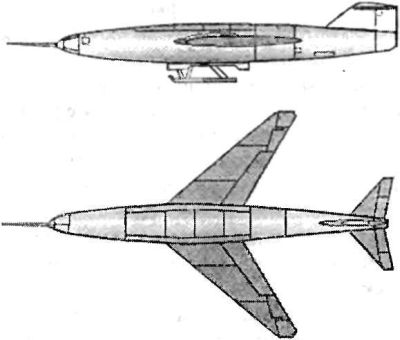
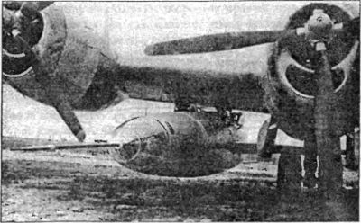

Сверхзвуковые самолеты серии «346»
Как мы помним, в годы войны Немецкий институт исследований в области планеризма DFS разработал несколько экспериментальных летательных аппаратов с ракетными двигателями. Одним из самых выдающихся проектов этого института стал ракетоплан «DFS-346», о котором мы уже говорили в главе 2.
В октябре 1946 года командование советских оккупационных войск организовало вывоз немецких технических специалистов в Советский Союз. Пунктом назначения конструкторских групп, работавших над «DFS-346» (фирмы «Юнкерс» из города Дассау и фирмы «Зибель» из города Галле), был определен завод № 458 — поселок Иваньково Кимрского района Калининской области (ныне — город Дубна). Основными задачами этих групп было продолжение проектных и экспериментальных работ, начатых еще в Германии в 1945–1946 годах, разработка новых типов реактивных самолетов и экспериментальной сверхзвуковой летающей лаборатории. В частности, было сформировано ОКБ-2 по проектированию и освоению экспериментальных самолетов с жидкостным ракетным двигателем во главе с главным конструктором Хайнцем Рессингом и его заместителем Александром Березняком.
На практике ОКБ-2 занималось разработкой, изготовлением и испытанием экспериментального самолета «346» с двухкамерным ЖРД с целью достижения околозвуковых скоростей и изучения поведения самолета в этой области. Для этой цели самолет «346», частично собранный из агрегатов, изготовленных еще в Германии, оснащался большим количеством различных датчиков, многие из которых создавались в лабораториях ОКБ-2.
Среди особенностей ракетного самолета «346» следует отметить наличие отделяемой гермокабины без выступающих частей, стабилизатор с изменяемым в полете углом установки и лыжное шасси. Летчик располагался в машине горизонтально, лицом вперед, в аварийной ситуации он имел возможность с помощью взрывных болтов отделить гермокабину от фюзеляжа и спуститься на парашюте.
Самолет имел длину 13,4 метра и стреловидное крыло с углом установки 45°. Двигатель Вальтера «HWK 109-509С» тягой в 2000 килограммов должен был за 2 минуты разгонять самолет до скорости в 2 Маха.

Летчиком-испытателем самолета «346» стал капитан Вольфганг Цизе, бывший шеф-пилот на авиазаводе Зибеля. Предварительно Цизе тренировался на модифицированных планерах Грюнау и Краних, управление которых было скопировано с «DFS-346».
В 1948 году Цизе выполнил планирующий полет на «346-1» («346П»). Полеты выполнялись как на буксире с трофейным самолетом «Ju-388», так и на подвеске под правым крылом американского тяжелого бомбардировщика «В-29» («Б-29») и сменившим его «Ту-4». Бомбардировщик поднимал самолет «346» на высоту нескольких километров, где происходило расцепление. Дальнейший полет «346» выполнял самостоятельно.
Исходный прототип летал в безмоторном варианте, с целью проверки устойчивости и управляемости. На второй самолет «346-3» был установлен двигатель, но первые полеты он также совершил без его включения. 30 сентября 1949 года самолет потерпел аварию при посадке (сложилась лыжа), и летчик получил незначительные травмы головы. После ремонта, в мае, летные испытания возобновились.
Тут необходимо сказать, что испытания экспериментального самолета «346» проводились в сложных полевых условиях на необорудованном аэродроме «Третьяково» (Луховцы) при отсутствии ангарных производственных помещений, без должного снабжения электроэнергией и водой, крайне необходимых для испытаний, и недостаточном качестве и размерах летного поля. Все эти обстоятельства затрудняли и усложняли эксплуатацию самолета, увеличивая возможность отказа его материальной части.
Всего на самолете «346-3» летчик-испытатель Цизе совершил четыре вылета (один планерный, три — двигательных). Последний, четвертый, полет состоялся 14 сентября 1951 года. «346» отцепился от носителя на высоте 10 километров и, включив реактивный двигатель, стал стремительно набирать высоту. При наборе скорости самолет потерял управляемость и пилот получил приказ катапультироваться. Взорвав на высоте б километров пироболты, летчик отделил герметичную кабину, а на высоте 3 километров катапультировался из нее. Раскрыв парашют, летчик приземлился, повредив при этом ногу. Самолет же упал и сгорел вблизи деревни Смоленские Борки. После этой катастрофы Вольфганг Цизе тяжело заболел и скончался. Его похоронили на кладбище поселка Иваньково. Впоследствии мать Цизе произвела его перезахоронение в Германии.
Несмотря на аварию самолета «346», поставленная при его испытаниях цель была достигнута. Проведенные испытания показали безотказную работу жидкостного ракетного двигателя как у земли, так и в воздухе, безупречную работу средств спасения, возможность пилотирования летчика в лежачем положении, допускающем значительно большие перегрузки на организм летчика по сравнению с обычным положением. В процессе испытаний были достигнуты следующие показатели: максимальная высота полета — 12–13 километров, максимальная скорость — 950 км/ч, максимальная скороподъемность — 100 м/с, предполагаемая скорость пикирования во время последнего полета с работающим ЖРД была сверхзвуковой.

После катастрофы с «386-3» испытательная программа была сначала приостановлена, а затем и полностью прекращена. Согласно заключению экспертов, продолжение полетов на имеющемся летном экземпляре самолета «346-1» не могло дать новых результатов, а совершенствование машины не представлялось возможным из-за изношенности материальной части.